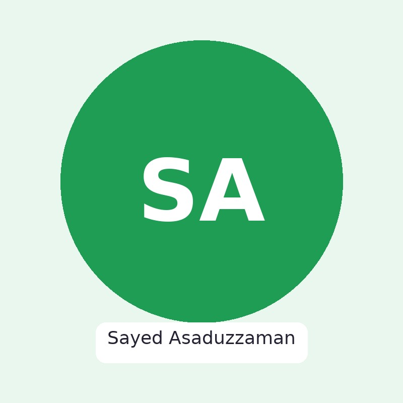

Building AI systems that connect imaging and bioinformatics for data‑driven discovery and diagnostics.

I am a Ph.D. student in Computer Science at the University of North Dakota focusing on Artificial Intelligence, Machine Learning, and Biomedical Imaging. My research integrates deep learning and bioinformatics to develop intelligent systems for diagnostics and data‑driven discovery.
AI for biomedical imaging, gene expression prediction, and multimodal analytics.
Machine‑learning–based predictive framework using clinical and survey data; explored feature importance and model ensembles to stratify risk and support decision‑making.
Embedded vision with Python/Raspberry Pi & Arduino for aquatic navigation and obstacle avoidance; course project extended with additional autonomy modules.
Deep learning for hyperspectral imaging and spectral feature extraction; includes published work on automated feature extraction and classification.
Built software to predict stress risk levels; integrated statistical modeling and ML with interpretable outputs for end‑users.
More on Google Scholar and ResearchGate.
Highest publication in Scopus‑indexed journals (2020), Daffodil International University, Bangladesh.
ICT Ministry, Government of Bangladesh (2017) in support of research excellence.
Awarded for Photonics Asia 2016 based on research contribution in photonics.
Best Paper Award at BUET, Bangladesh (2015).
I’m open to collaborations in AI for biomedical imaging, gene expression prediction, and interpretable machine learning.